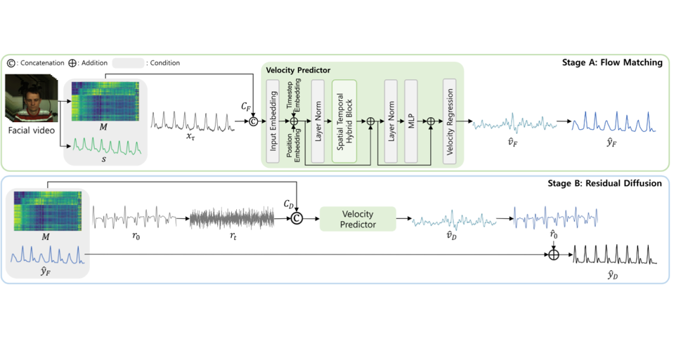
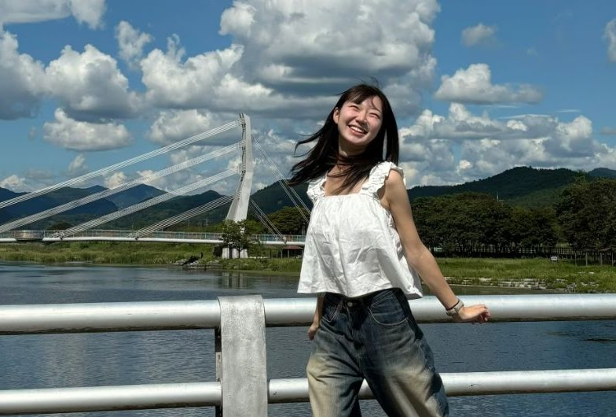
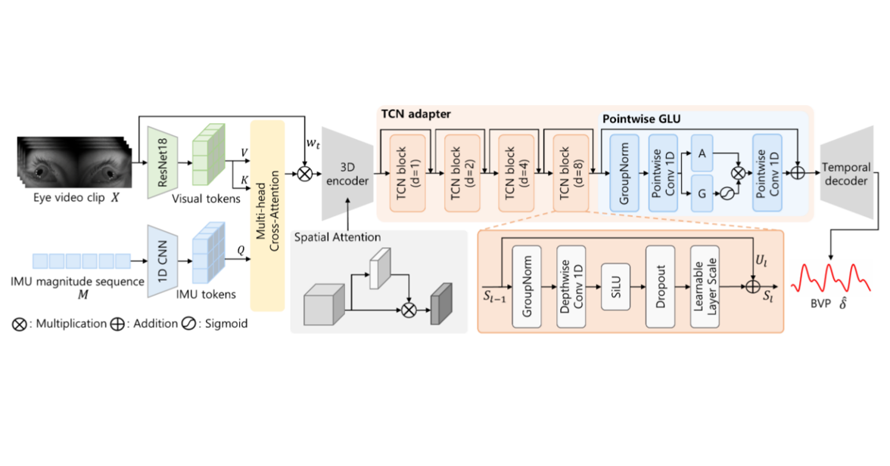
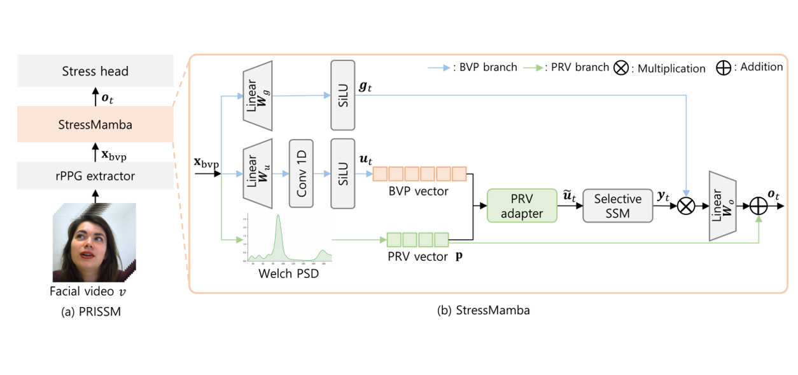
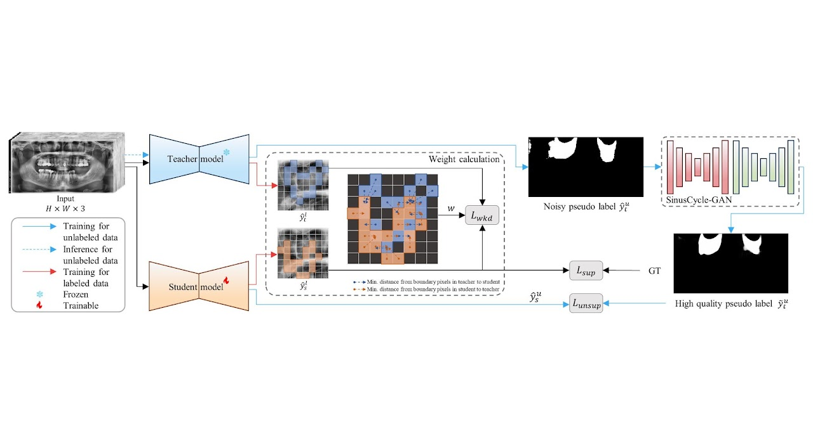
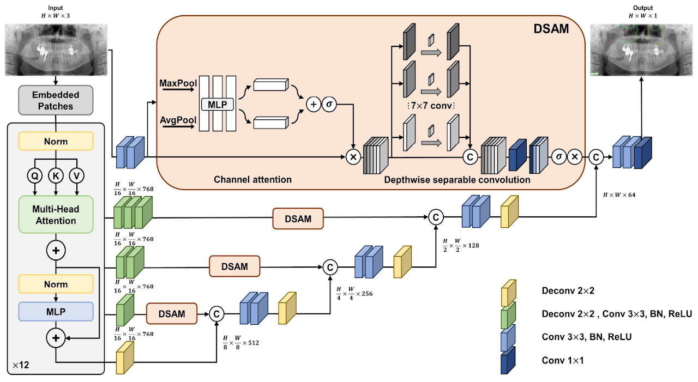
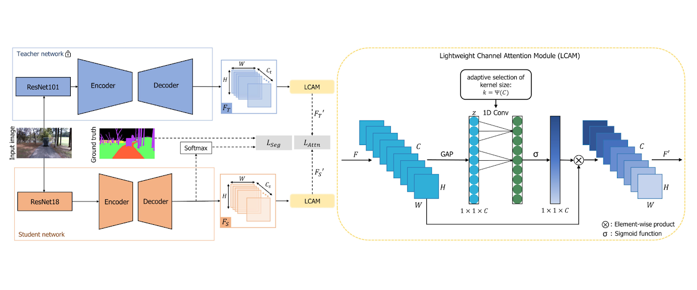

PulsePath: Two-Stage Generative Waveform Refinement for Robust Remote Photoplethysmography Estimation
A two-stage framework combining flow matching and residual diffusion to refine robust rPPG waveforms.
UNDER REVIEWM.S. Student · Jeonbuk National University
Physiological Computing & Computer Vision Researcher
Electronic & Information Engineering · advised by Prof. Sang Jun Lee
How reliably can ordinary cameras recover physiological signals outside controlled settings?
I work on robust remote PPG, non-contact stress estimation, egocentric vision, and medical image analysis.
01 / RESEARCH
My research combines computer vision, biosignal processing, and deep learning to measure physiological signals without physical contact.
Current projects cover robust remote photoplethysmography (rPPG), stress estimation, and heart-rate estimation from egocentric NIR eye video. My earlier work includes maxillary-sinus segmentation in panoramic X-rays and knowledge distillation for semantic segmentation.
Long term, I am interested in physiological sensing with egocentric and wearable cameras.
02 / SELECTED WORK
Selected journal and conference work in physiological sensing, medical imaging, and computer vision.
Showing all 8 works.

A two-stage framework combining flow matching and residual diffusion to refine robust rPPG waveforms.
UNDER REVIEW
Temporal learning for contact-free heart-rate sensing in the challenging egocentric near-infrared eye setting.
ECCV WORKSHOP
Pulse-rate-variability guidance meets selective state-space modeling for camera-based stress recognition.

A semi-supervised framework that uses weighted knowledge distillation to suppress unreliable signals from teacher–student structural mismatches and SinusCycle-GAN to refine pseudo-labels.

An attention-enhanced U-Net transformer for delineating maxillary sinus regions in dental panoramic radiographs.

A lightweight student network learns channel-aware feature importance for outdoor driving-scene segmentation.
Jeju Gravel Hotel · Nov 13–16, 2024
Jeonbuk National University International Convention Center · Jun 25–27, 2025
03 / JOURNEY
Building a foundation across electronics, computer vision, and physiological computing.
CERTIFICATION · 2023Microsoft · Credential ID: GTcD-4wBm
View credential ↗MAR 2026 — PRESENT
Jeonbuk National University · Jeonju, Republic of Korea
Advised by Prof. Sang Jun Lee. Researching robust rPPG and contact-free stress estimation.
MAR 2022 — FEB 2026
Jeonbuk National University · Jeonju, Republic of Korea
Developed a foundation in signal processing, embedded systems, computer vision, and deep learning.
04 / RECOGNITION
Nine recognitions across research, AI, engineering design, entrepreneurship, and mentoring.
Mentoring Program · Jeonbuk National University
View certificate ↗ 2024Big Data Innovation Convergence College · Seoul National University
View certificate ↗ 2024National Contest of Champions · Seoul National University
View certificate ↗ 2023Startup Idea Challenge for Social Big Data Analysis · University of Seoul
View certificate ↗05 / OPEN TO OPPORTUNITIES
I work on camera-based physiological sensing, computer vision, and medical AI. I’m exploring research and AI engineering opportunities, and I’m also happy to discuss collaborations.